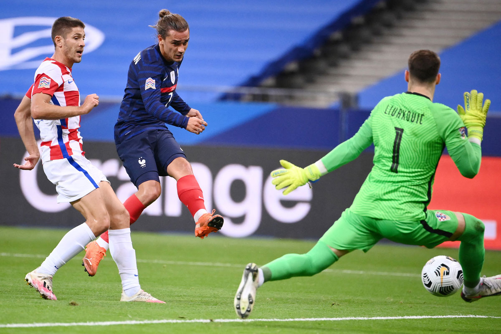
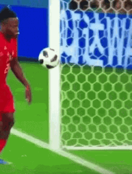
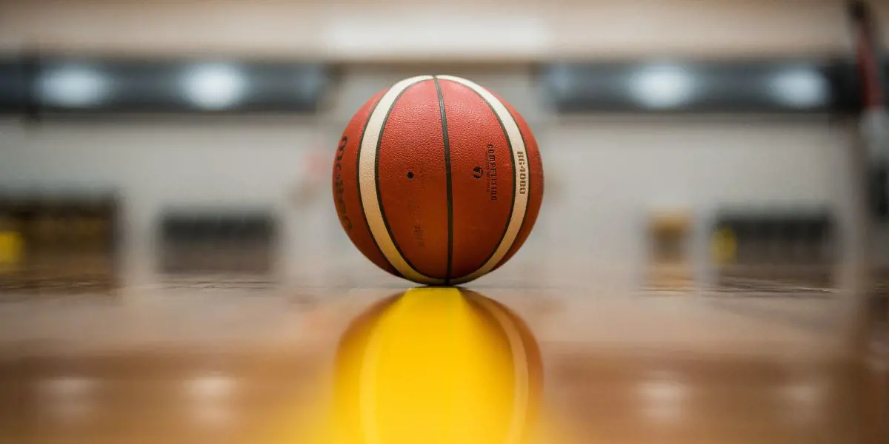
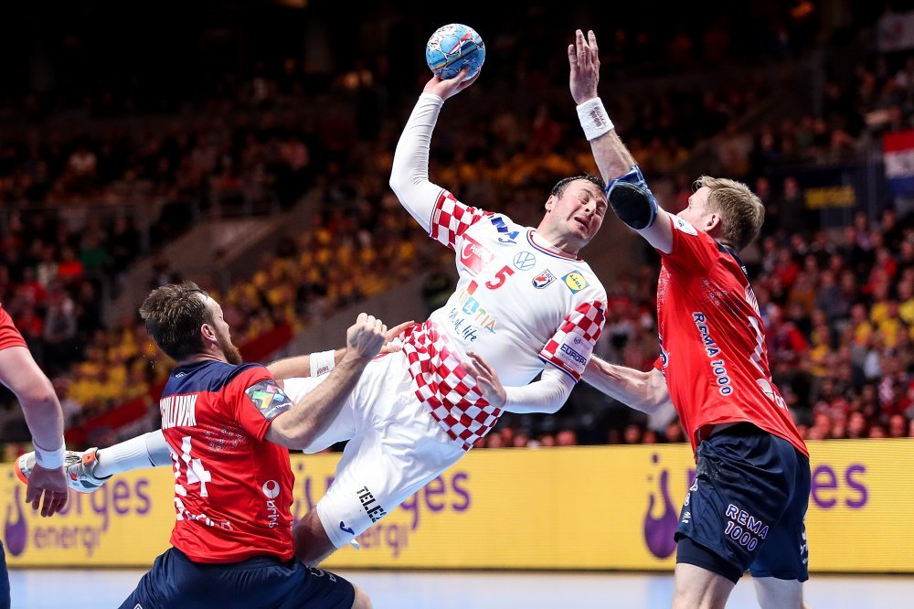
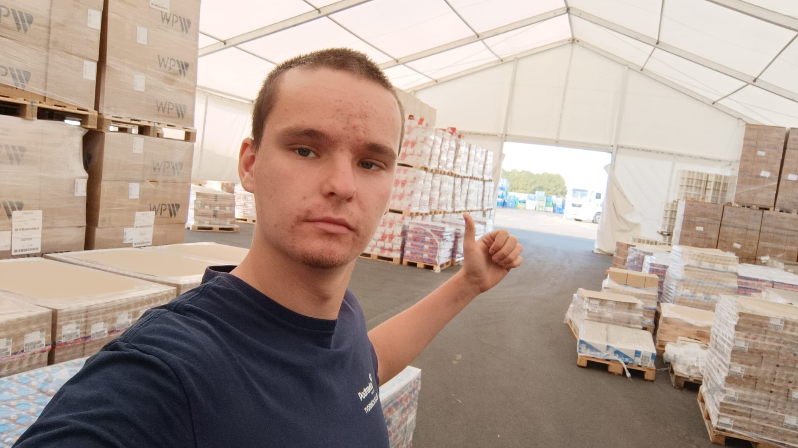

Nogomet

Nogomet je momčadski sport koji se igra između dvije ekipe od po 11 igrača. Cilj igre je postići više golova od protivnika tako što se lopta ubacuje u protivnički gol, uglavnom nogom, ali bez korištenja ruku (osim vratara u svom kaznenom prostoru). Igra traje 90 minuta (dva poluvremena po 45 minuta), a odvija se na travnatom igralištu. To je najpopularniji sport na svijetu, s milijunima igrača i navijača.

drugi izbor: Formula1

David Bobo
Košarka
Košarka je timski sport koji se igra između dvije momčadi od po 5 igrača na terenu. Cilj je ubaciti loptu u protivnički koš i tako osvojiti bodove. Koš se nalazi na visini od 3,05 metara. Utakmica se sastoji od četiri četvrtine, svaka po 10 minuta (ili 12 u NBA-u). Igra se brzo, s puno trčanja, dodavanja i šutiranja. Popularna je širom svijeta, a poznata po dinamici, atraktivnim potezima i zakucavanjima.

drugi izbor: Rukomet

